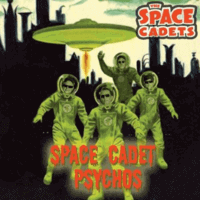

the Space Cadets - Space Cadet Psychos (Single, 2015)
01 - Space Cadet Psychos (2:21)
02 - Flying Thru' Outer Space (2:29)
© Tombstone Records :: [TOMB-45 116]
Notes
United Kingdom.
Deke Tempest - Vocals, Rhythm guitar
Marky X - Lead guitar
Ring Of Steel - Double bass, Vells
Lunar Stik - Drums
Both songs are credited to M.Zihni
Recorded at Sugar Rays Vintage Recording Studio, Wickford, Essex
Engineer - Pat Reyford
All songs recorded live on good old vintage equipment. All original vocals - no overdubs anywhere on anything
'Space Noises' added to songs afterwards by Mouse Zinn and Pat Reyford
reference information: Discogs®
Review
099/366 (Project 366)
Brand new rhythm, brand new songs.. but still with the good old feelings of a terrific astrobilly. A little more groovy, but a little less interesting - however much more perky. Yes, it is so ambiguous.. rough, tough, shakin' a lot. Quite simple, but very pushy and punchy Rockabilly and rather wild tunes. All is reflected in their title and lyrics. Space Cadet Psychos Flying Thru' Outer Space with refreshed line-up and with some ideas to drive and fun around. Actually, quite thrilling tracks. Pretty one mood, but "Flying Thru' Outer Space" with a fancy percussion and tougher sound which is a little different from the first track "Space Cadet Psychos".
Both songs are in a relative manner of the fifties/psycho/neo rockin' and rollin' cocktail. If you have heard their hits, then these songs will seem pretty enjoyable. Although in some ways they do not reach complete delight. Closer to their later work and sound with a harsher sound of (neo)Rockabilly and even with some soft mad tones. Boppin', hoppin' and ravin' sound. Texts with a fairly narrative form and a story of what was and will be. About them. It turns out to be a very conceptual mood with daring emotions. Insanely peppy vibe.
I liked these compositions. It is recorded live and probably it is felt. The drums sound decent, the rhythm is clear, the vocals reminiscent of good memories, the lead guitar adds rockin' spice. This appearance makes you stop and pay attention to what is happening. Spacey tunes!